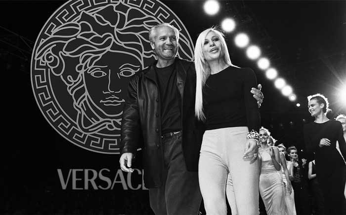
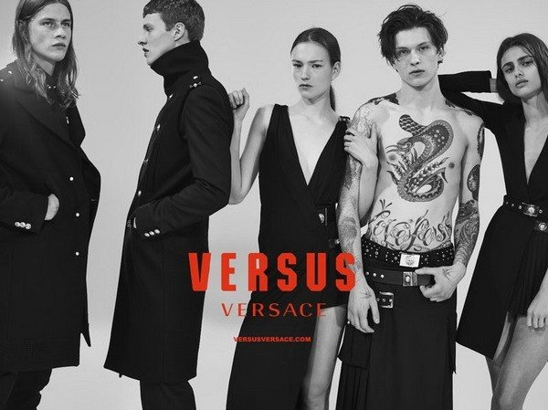

-Người sáng lập ra Versace là Gianni Versace , một nhà thiết kế thời trang lừng danh tại Ý trong cuối
thế kỷ 20. Và sự nghiệp riêng của ông bắt đầu khi đặt chân tới Milan với công việc thiết kế thời trang tại
các xưởng vẽ. Vốn được sinh ra và lớn lên tại duyên hải nước Ý gần với Hy Lạp, cho nên Gianni đã chịu ảnh
hưởng của các giá trị văn hóa, tinh thân truyền thống của nền văn minh Hy Lạp cổ đại. Bên cạnh đó tư tưởng
thẩm mỹ của ông cũng chịu ảnh hưởng từ trường pháo nghệ thuật đại chúng Pop Art.
- Đến năm 1978, với sự giúp đỡ của anh trai Santo và em gái Donatella, ông đã mở cửa hàng đầu tiên của riêng
mình với tên Gianni Versace S.P.A tại Milan. Và tháng 3 cùng năm ông cho ra mắt các sản phẩm thời trang nữ
đầu tiên và tháng 9 là dòng thời trang cho nam giới cũng được tung ra.

-Những dòng nước hoa dành cho nam giới và phụ nữ ra đời dưới tên các nhãn hiệu Versace, Versus, Jeans và Jeans Couture và nước hoa thương hiệu Versace được sản xuất thông qua sự hợp tác với Euroitalia SRL.
Cho đến nay, bộ sưu tập nước hoa của thương hiệu Versace đã có hơn 50 chai và dòng nước hoa ra mắt sớm nhất là vào năm 1981, gần đây nhất là vào năm 2016. Nước hoa Versace được hợp tác và điều chế bởi những nhà pha chế danh tiếng như Alberto Morillas, Nathalie Lorson, Christine Nagel, Olivier Cresp, Francis Kurkdjian, Aurelien Guichard, Sophie Labbe, Antoine Maisondieu, Antoine Lie, Mark Buxton… Thương hiệu Versace hiện đã nằm trong TOP 50 hãng nước hoa nổi tiếng nhất trên thế giới.
2 trong số những dòng nước hoa cực kì được yêu thích và bán chạy số 1 của thương hiệu Versace phải kể đến là Versace Eros và Versace Bright Crystal.
